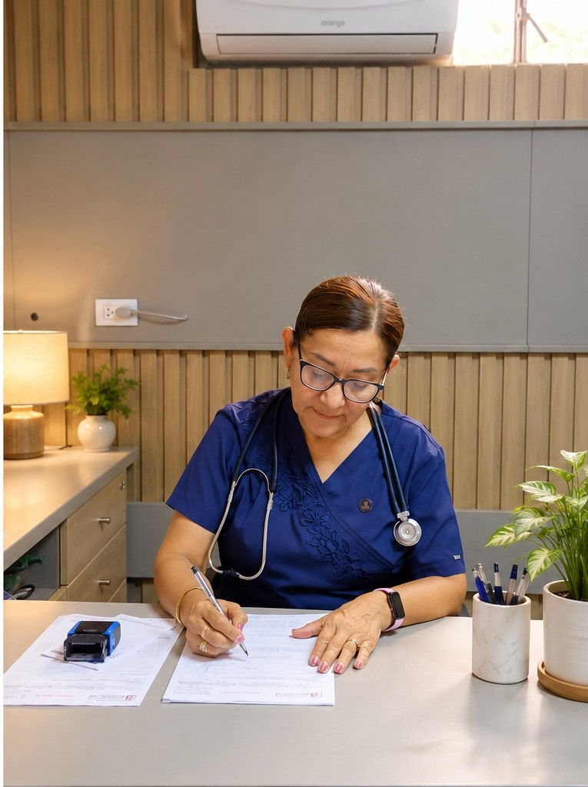
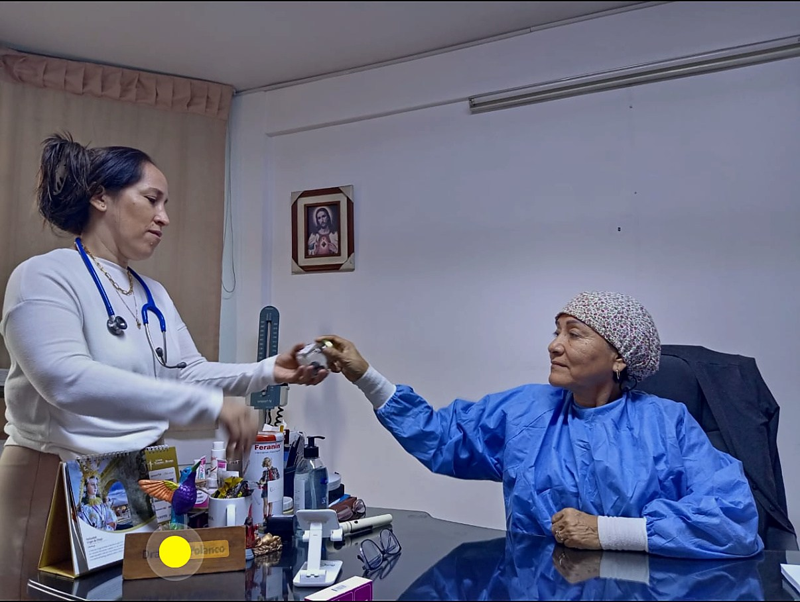
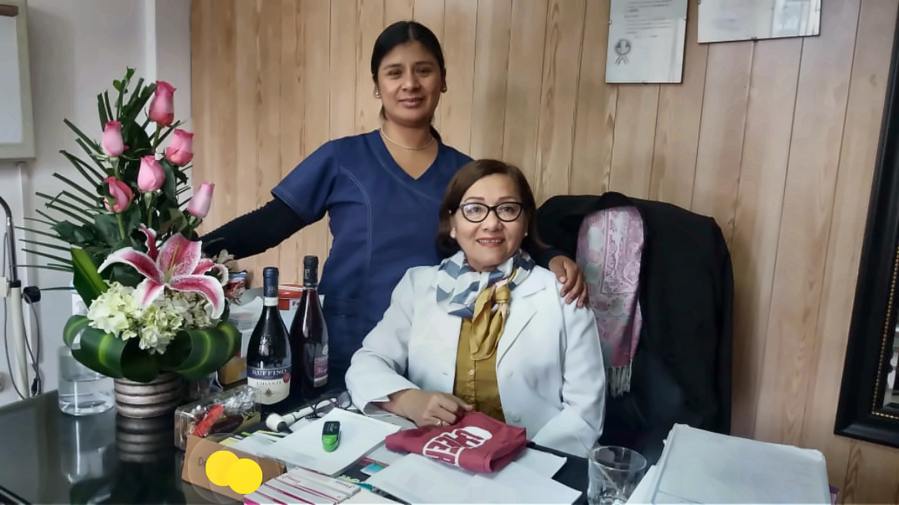
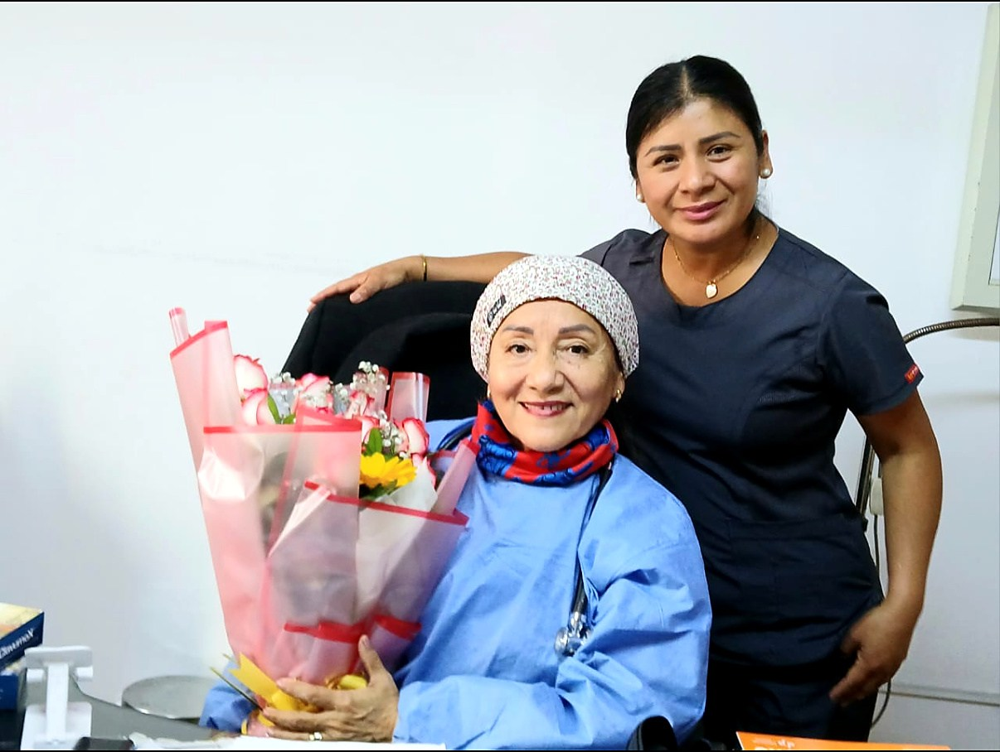

🩺
Medicina general
Evaluación y orientación médica para molestias y problemas de salud frecuentes.
En el Consultorio Médico de la Dra. Ana Polanco brindamos atención médica general para niños, adultos y adultos mayores, con un enfoque humano, profesional y cercano en Ate-Vitarte.
Dra. Ana PolancoLunes a sábado · 9:00 a. m. – 2:00 p. m.

La Dra. Ana Polanco cuenta con más de 20 años de experiencia atendiendo a familias de Ate-Vitarte. Su práctica se basa en la escucha, el respeto, la evaluación cuidadosa y la orientación clara para que cada persona comprenda mejor su salud.
Escríbenos para consultar disponibilidad de citas y detalles de atención.
Nuestra prioridad es ofrecer orientación profesional y un trato cercano.
Trato amable, respetuoso y atento a las necesidades de cada paciente.
Más de dos décadas de experiencia en atención médica.
Medicina general para niños, adultos y adultos mayores.
Consultorio en el segundo piso del Centro Médico Berrocal.
Sabemos que acudir al médico requiere confianza. Por eso, buscamos ofrecer un ambiente cómodo, respetuoso y acogedor, donde cada persona pueda expresar sus inquietudes y recibir orientación médica personalizada.
Creemos en el valor de la prevención, la comunicación y el seguimiento de la salud de toda la familia.
Solicitar una cita ↗


Desde la coordinación de citas hasta la consulta médica, buscamos ofrecer una atención amable y organizada. Nuestra secretaria acompaña la atención del consultorio desde hace más de 15 años.
Queremos que te sientas escuchado y bien recibido desde el primer contacto.
Encuentra nuestro consultorio en el Centro Médico Berrocal.
Si has visitado nuestro consultorio, tu opinión honesta puede ayudar a otras familias a conocernos. Evita incluir información médica privada.
Dejar una reseña en Google ↗Puedes llamar o escribir al 923 289 077. Recepción te ayudará a confirmar disponibilidad.
Estamos en Jr. Libertad 110, segundo piso del Centro Médico Berrocal, Ate-Vitarte, Lima.
De lunes a sábado, de 9:00 a. m. a 2:00 p. m. Es recomendable confirmar tu visita con recepción.
No. WhatsApp es para información y coordinación de citas. En una emergencia acude al servicio de urgencias más cercano.